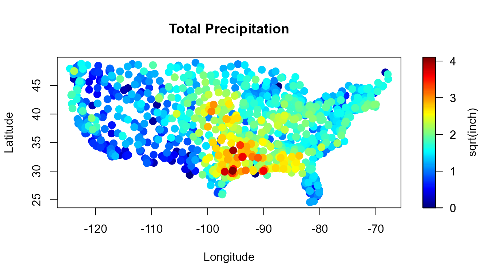
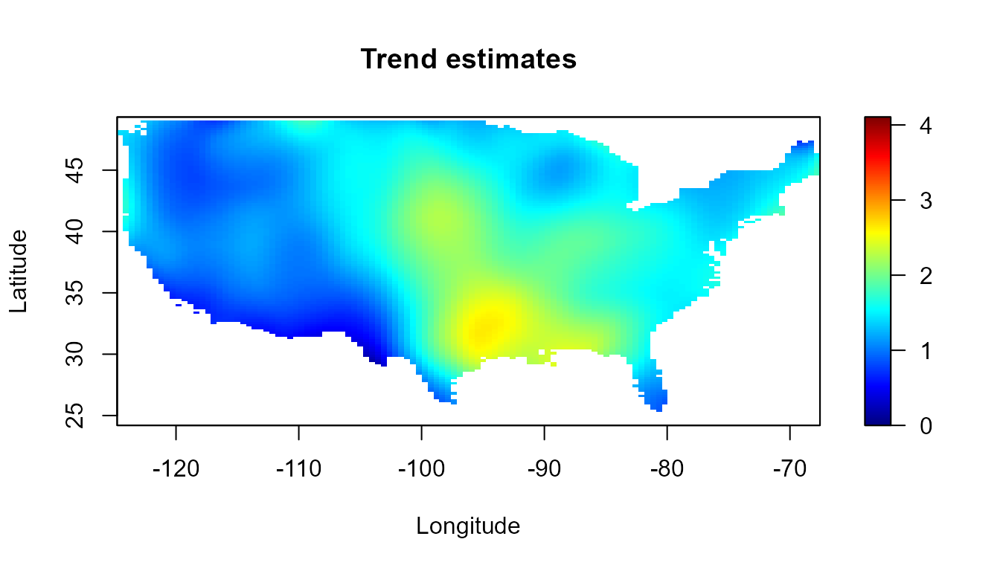

Nonparametric Spatial Data Analysis with the npsp Package
Ruben Fernandez-Casal (ruben.fcasal@udc.es)
npsp 0.7.5
Source:vignettes/npsp.Rmd
npsp.RmdThis vignette (a working draft) tries to illustrate the use of the npsp package…
## Package npsp: Nonparametric Spatial Statistics,
## version 0.7-5 (built on 2019-06-29).
## Copyright (C) R. Fernandez-Casal 2012-2018.
## Type `help(npsp)` for an overview of the package and
## `demo(package = "npsp")` for the list of available demos.Data
As an example, the precipitation data set will be considered (a SpatialPointsDataFrame object). It consists of total precipitations (rainfall inches) during March 2016 recorded over 1053 locations on the continental part of USA (available at https://www.ncdc.noaa.gov/cdo-web/datasets).

n <- length(precipitation$y)
coord <- coordinates(precipitation)
attributes <- attributes(precipitation)
labels <- attributes$labels
border <- attributes$border
interior <- attributes$interior
slim <- range(precipitation$y)
col <- jet.colors(256)
col2 <- hot.colors(256)
cpu.time(reset=TRUE)## CPU time has been initialized.Exploratory data analysis
## Min. 1st Qu. Median Mean 3rd Qu. Max.
## 0.000 1.100 1.539 1.551 1.954 4.105
## Time of last operation:
## user system elapsed
## 0.16 0.91 1.06Automatic model fitting
np.fitgeo (automatically) fits an isotropic nonparametric geostatistical model by estimating the trend and the variogram (using a bias-corrected estimator) iteratively.
nbin <- c(30, 30)
geomod <- np.fitgeo(coord, precipitation$y, nbin = nbin, svm.resid = TRUE)
cpu.time(total = FALSE)## Time of last operation:
## user system elapsed
## 18.89 1.33 20.39Data mask (filtering):
spp.grid <- SpatialPoints(coords(geomod))
proj4string(spp.grid) <- proj4string(border) # CRS("+init=epsg:28992 +units=km")
mask.sp <- !is.na(over(spp.grid, as(border, 'SpatialPolygons')))
geomod <- mask(geomod, mask = mask.sp | (geomod$binw > 0))
cpu.time(total = FALSE)## Time of last operation:
## user system elapsed
## 0.11 0.06 0.36Plot final trend and variogram estimates:

The algorithm is described below…
Linear binning
## CPU time has been initialized.## Time of last operation:
## user system elapsed
## 0 0 0simage(bin, main = 'Binning averages and data points', slim = slim,
col = col2, xlab = labels$x[1], ylab = labels$x[2],
sub = paste0("(", paste(dim(bin), collapse = "x"), ")"))
plot(border, border = "darkgray", lwd = 2, add = TRUE)
plot(interior, border = "lightgray", lwd = 2, add = TRUE)
points(bin$data$x, pch ='+')
coordvs <- coordvalues(bin)
abline(v = coordvs[[1]], lty = 3)
abline(h = coordvs[[2]], lty = 3)
Pilot estimation
Initial trend estimates
## [,1] [,2]
## [1,] 6.85061 0.000000
## [2,] 0.00000 2.946348# Initial linear Local trend estimation
lp0 <- locpol(bin, h = lp0.h, hat.bin = TRUE)
cpu.time(total = FALSE)## Time of last operation:
## user system elapsed
## 0.50 0.97 1.53simage(lp0, main = "Initial trend estimates", slim = slim,
col = col2, xlab = labels$x[1], ylab = labels$x[2])
plot(border, border = "darkgray", lwd = 2, add = TRUE)
plot(interior, border = "lightgray", lwd = 1, add = TRUE)
points(coord[,1], coord[,2], col="darkgray")
# Residuals
lp0.pred <- predict(lp0)
lp0.resid <- lp0$data$y - lp0.pred
lp0.r2 <- cor(lp0.pred, lp0$data$y)^2 # assuming independence...
old.par <- par(mfrow=c(1,2))
hist(lp0.resid)
plot(lp0.pred, lp0.resid, main = "Residuals vs Fitted",
sub = paste("R^2 =", round(lp0.r2, 2)),
xlab = "Fitted values", ylab = "Residuals")
abline(h = 0, lty = 2, col = "darkgray")
Initial variogram
# rule.svar(coord)
nlags <- 60
maxlag <- 10
# Empirical variogram with linear binning:
svar.bin <- svariso(coord, lp0.resid, nlags = nlags, maxlag = maxlag)
sv.lags <- coords(svar.bin)
svar.np.h <- h.cv(svar.bin)$h
# Local linear variogram estimation
svar.np <- np.svar(svar.bin, h = svar.np.h) # biased
# Fitted Shapiro-Botha variogram model
svm0 <- fitsvar.sb.iso(svar.np, dk = 0)
# Bias-corrected variogram estimation
svar.np2 <- np.svariso.corr(lp0, nlags = nlags, maxlag = maxlag,
h=svar.np.h, plot = TRUE) 
## Iteration 2 : 1
## Iteration 3 : 0.07754415
## Iteration 4 : 0.0530029
## Iteration 5 : 0.03988535# Fitted Shapiro-Botha variogram model
svm02 <- fitsvar.sb.iso(svar.np2, dk = 0)
cpu.time(total = FALSE)## Time of last operation:
## user system elapsed
## 9.67 1.26 11.03plot(svm02, main = "Nonparametric bias-corrected semivariogram\nand fitted models",
legend = FALSE, xlim = c(0,max(coords(svar.np2))),
ylim = c(0,max(svar.np2$biny, na.rm = TRUE)))
plot(svm0, add = TRUE)
plot(svar.np, type = "p", pch = 2, add = TRUE)
abline(h = c(svm02$nugget, svm02$sill), lty = 3)
abline(v = 0, lty = 3)
legend("bottomright", legend = c("corrected", 'biased'),
lty = c(1, 1), pch = c(NA, NA), lwd = c(2, 1))
Bandwidth selection
# GCV criterion (Francisco-Fernandez and Opsomer, 2005)
lp.h <- h.cv(bin, objective = "GCV", cov = svm02, DEalgorithm = FALSE)$h
lp.h # <- diag(c(11.11463, 18.59536))## [,1] [,2]
## [1,] 11.11399 0.0000
## [2,] 0.00000 18.6437## Time of last operation:
## user system elapsed
## 1.80 0.83 2.67Final variogram
Trend re-estimation
Final trend (low resolution):
## Time of last operation:
## user system elapsed
## 0.09 0.03 0.13simage(lp, main = "Trend Estimation", slim = slim,
xlab = labels$x[1], ylab = labels$x[2], col = col2)
plot(border, border = "darkgray", lwd = 2, add = TRUE)
plot(interior, border = "lightgray", lwd = 1, add = TRUE)
# spoints(coord[,1], coord[,2], precipitation$y, add = TRUE)
# New Residuals
lp.pred <- predict(lp)
lp.resid <- lp$data$y - lp.pred
lp.r2 <- cor(lp.pred, lp$data$y)^2 # assuming independence...
old.par <- par(mfrow=c(1,2))
hist(lp.resid)
plot(lp.pred, lp.resid, main = "Residuals vs Fitted",
sub = paste("R^2 =", round(lp0.r2, 2)),
xlab = "Fitted values", ylab = "Residuals")
abline(h = 0, lty = 2, col = "darkgray")
Fitted variogram model
svar.bin <- svariso(coord, lp.resid, nlags = nlags, maxlag = maxlag)
svar.np.h <- h.cv(svar.bin)$h # svar.np.h <- 2.257358
svar.np <- np.svar(svar.bin, h = svar.np.h)
svm <- fitsvar.sb.iso(svar.np, dk = 0)
svar.np2 <- np.svariso.corr(lp, nlags = nlags, maxlag = maxlag,
h = svar.np.h, plot = TRUE, ylim = c(0, 0.3))
## Iteration 2 : 1
## Iteration 3 : 0.02763527Final variogram:
## Time of last operation:
## user system elapsed
## 4.97 1.13 6.12plot(svm2, main = "Nonparametric bias-corrected semivariogram\nand fitted models",
legend = FALSE)
plot(svm, add = TRUE)
plot(svar.np, type = "p", pch = 2, add = TRUE)
abline(h = c(svm2$nugget, svm2$sill), lty = 3)
abline(v = 0, lty = 3)
plot(svm0, lty = 2, lwd = 1, add = TRUE)
plot(svm02, lty = 2, lwd = 2, add = TRUE)
legend("bottomright", legend = c("corrected", 'biased', "corrected initial",
'biased initial'), lty = c(1, 1, 2, 2), pch = c(1, 2, NA, NA),
lwd = c(2, 1))
## Time of last operation:
## user system elapsed
## 0.02 0.05 0.07Final trend estimates
High resolution binning (120x120):
bin.hd <- binning(coord, precipitation$y,
nbin = c(120,120), set.NA = TRUE)
simage(bin.hd, main = 'Binning averages',
xlab = labels$x[1], ylab = labels$x[2],
sub = paste0("(", paste(dim(bin.hd), collapse = "x"), ")"),
slim = slim)
plot(border, border = "darkgray", lwd = 2, add = TRUE)
plot(interior, border = "lightgray", lwd = 1, add = TRUE)
Data mask (filtering):
spp.grid <- SpatialPoints(coords(bin.hd))
proj4string(spp.grid) <- proj4string(border) # CRS("+init=epsg:28992 +units=km")
mask.sp <- !is.na(over(spp.grid, as(border, 'SpatialPolygons')))
mask <- mask.sp | (bin.hd$binw > 0) # to avoid filtering data...
bin.hd <- mask(bin.hd, mask = mask)Final trend (high resolution):
lp.hd <- locpol(bin.hd, h = lp.h)
simage(lp.hd, main = "Final trend estimates", slim = slim,
xlab = labels$x[1], ylab = labels$x[2], col = col2)
plot(border, border = "darkgray", lwd = 2, add = TRUE)
plot(interior, border = "lightgray", lwd = 1, add = TRUE)
## Time of last operation:
## user system elapsed
## 2.42 0.98 3.45Kriging predictions
Kriging maps
simage(krig.grid, 'kpred', main = 'Kriging predictions', slim = slim,
xlab = labels$x[1], ylab = labels$x[2])
plot(border, border = "darkgray", lwd = 2, add = TRUE)
plot(interior, border = "lightgray", lwd = 1, add = TRUE)
simage(krig.grid, 'ksd', main = 'Kriging sd',
xlab = labels$x[1], ylab = labels$x[2], col = col2)
plot(border, border = "darkgray", lwd = 2, add = TRUE)
plot(interior, border = "lightgray", lwd = 1, add = TRUE)
## Time of last operation:
## user system elapsed
## 0.23 0.89 1.17
## Total time:
## user system elapsed
## 40.45 7.87 48.89